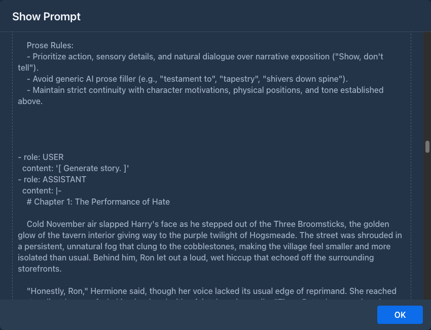

Generation pipeline
How Marginalia turns the instruction panel into a new story part: the steps that build the prompt, how the prompt is
fitted into the model's context, how the answer is streamed into the part, and the events extensions can use to change
any of it. The code is in domain/service/impl/StoryGenerationServiceImpl.java and
domain/service/impl/generation/.
Overview
flowchart TB
UI["ManuscriptStoryPart<br/>Generate / Swipe / Regenerate"] -->|"generateNextTurn(book, TurnInput, GenerationRequest, GenerationListener)"| E
subgraph E["GenerationEngine (generation threads)"]
direction TB
S1["1 PREPARE_GENERATION<br/>provider, protocol"] --> S2["2 PREPARE_CONSTANTS<br/>book prompts, user prompt"]
S2 --> S3["3 PROCESS_LOREBOOK<br/>activate and render lore"]
S3 --> S4["4 PREPARE_CONTENT<br/>summaries, story, system prompt"]
S4 --> S5["5 PREPARE_PAYLOAD<br/>chat messages"]
S5 --> S6["6 GENERATE_NEW_MESSAGE<br/>create / reset the part"]
S6 --> S7["7 INFERENCE<br/>stream the answer"]
S7 --> S8["8 CLEANUP<br/>finish, roll back on failure"]
end
S7 <-->|"streaming chat completion"| LLM["OpenAI-compatible API"]
E -.->|"GenerationListener callbacks"| UI
X["Extensions"] -.->|"addEventListener(Events.X, ...)"| EThe steps always run in this order. Any step can jump straight to CLEANUP (on an error, a validation problem or
cancellation), and CLEANUP always runs last.
Starting a generation
CancellationToken token = storyGenerationService.generateNextTurn(
manuscript, // the book
new TurnInput(scene, povCharacter, presentCharacters, instructions),
GenerationRequest.newMessage(), // or newSwipe(part), regenerate(part)
listener); // GenerationListener - UI callbacksgenerateNextTurn is @NoTx and returns immediately with a CancellationToken; token.cancel() stops the
generation. It must be called on a thread with a request (the UI thread): it captures the session in
ThreadCopyRequestAttributes so the steps run as the user who started the generation (see
The current user).
TurnInput holds the four fields of the instruction panel: sceneSetting, povCharacter, presentCharacters,
instructions.
The engine
StoryGenerationServiceImpl holds the installed steps (from services-config.xml, one per GenerationStepType) and
a cached thread pool (threads named Generation thread NNN). Each call creates a GenerationEngine, which implements
GenerationController - the object every step works with:
Continuation style
The engine never blocks a thread while it waits - for event listeners, for a question to the user or for the model. Every step is written as a chain of callbacks: it emits an event and passes the rest of its work as the continuation, which the engine runs on a pool thread once all listeners are done:
protected void onStep(GenerationController controller) throws Exception {
controller.emitEvent(Events.BEFORE_PREPARE_PAYLOAD, () -> {
// ... build the payload ...
controller.setPayload(payload);
controller.emitEvent(Events.AFTER_PREPARE_PAYLOAD, controller::next);
});
}GenerationStepBase wraps each step: it enters the user's request scope, checks for cancellation and interruption,
and turns any exception into listener.onError(e) plus a jump to CLEANUP. Continuations are wrapped the same way.
forEachAsync iterates a list in this style (used for lorebook entries, which emit an event each).
The steps
1. PREPARE_GENERATION - PrepareForGenerationStep
Loads the book's inference provider (AI) and protocol and checks that both are set and that InferenceServices has
an implementation for the provider type. Otherwise the user gets Book is missing model. / Book is missing protocol. and the
generation ends.
Events: BEFORE_PREPARE_GENERATION, AFTER_PREPARE_GENERATION.
2. PREPARE_CONSTANTS - PrepareConstantsStep
Fills a new PrePromptData with the parts of the prompt that don't depend on the story:
- the provider's jailbreak (if Needs Jailbreak is on) and its token count,
- the book's effective prompts - master template, POV, tense, style, user prompt - each resolved book → user settings
→
DefaultsbyManuscriptService.
After AFTER_STATIC_TEMPLATE_DATA (where listeners may replace any of these), it renders the user prompt template
with UserPromptData (the four TurnInput fields) into userPromptProcessed and counts its tokens. The first
template rendering creates the generation's TemplateContext (see
Events: BEFORE_PREPARE_CONSTANT_DATA, AFTER_STATIC_TEMPLATE_DATA, AFTER_PREPARE_CONSTANT_DATA.
3. PROCESS_LOREBOOK - ProcessLorebookStep
Skipped when the book has no lorebook. Otherwise:
- Collect lorebooks: the book's lorebook and, breadth-first, all its sub-lorebooks. Deleted and disabled
lorebooks are skipped together with their sub-lorebooks; each lorebook is used once, so cycles are harmless. Each
is loaded with
LorebookService.fillEntries(entries with their effective tags) and detached. - Order entries of all collected lorebooks by
ordinal(ascending), then by creation time. -
Activate each entry - an entry is active when all of these hold:
- Render the active entries' payloads as templates with one shared
LorebookTemplateData- so variables set in one entry are visible in the following ones. A payload that fails to render is used as it is. - Insert: payloads with
IN_LORE_BLOCKare joined intobackgroundLore(the master template's ``); payloads withBEFORE_USER_PROMPTare joined intobackgroundUserLoreand put in front of the user prompt.
Events: BEFORE_PROCESS_LOREBOOK, PROCESS_LOREBOOKS (the list in LOREBOOKS can be changed),
PROCESS_LOREBOOK_ENTRY (once per entry, LOREBOOK_ENTRY), PROCESS_ACTIVATED_ENTRIES (ACTIVATED_LOREBOOK_ENTRIES
can be changed), AFTER_PROCESS_LOREBOOK.
4. PREPARE_CONTENT - PrepareContentStep
Decides which part of the story goes into the prompt and renders the system prompt.
Summaries. The branch from the root to the active leaf is read, and the summaries on it are collected (oldest
first) into SUMMARIES with SummaryService.collectBlocks: a meta summary replaces the summaries it merged, which are
skipped, see the summary chain. Each summary stores a hash of the story it covers;
when that was changed since, the summary is removed (a meta summary is unwound to the summary it replaced, which is
checked in turn) and the user is asked whether to continue without it (listener.askQuestion). The newest part
with a summary is the stop part: it and everything before it is represented by the summaries.
Token budget. With TokenLimits:
limit = context tokens − response tokens (protocol overrides, else provider limits)
baseTokens = system template rendered with lore and summaries (no story)
+ jailbreak + rendered user prompt + 100
reserved = PrePromptData.reservedTokens (set by extensions, 0 by default)If baseTokens + reserved ≥ limit, the generation stops with Contextual limit not sufficient. Otherwise parts are taken from the
newest backwards - skipping the part being regenerated, stopping at the stop part - starting from
baseTokens + reserved and counting each part as its tokenCount + 100. A part is added only if the running total with it stays within limit − 256; the first part that
doesn't fit ends the loop. The chosen texts, oldest first, become MANUSCRIPT_CHRONICLE.
System prompt. The master template is rendered with MasterTemplateData (backgroundLore, summaries,
narrativePov, narrativeTense, style + the template context) into systemPrompt. The estimate above renders it
with a fork of the template context, so macros that change variables don't run twice.
Events: BEFORE_PREPARE_CONTENT, BEFORE_SUMMARIES (SUMMARIES can be changed), AFTER_MANUSCRIPT_CONCATENATION
(MANUSCRIPT_CHRONICLE can be changed), AFTER_PREPARE_CONTENT.
5. PREPARE_PAYLOAD - PreparePayloadStep
Builds the chat completion messages:
system jailbreak + "\n\n" + system prompt (master template)
user [ Generate story. ]
assistant <oldest part in the chronicle>
user [ Generate more story. ]
assistant <next part>
...
user lore before user prompt + "\n\n" + rendered user promptEarlier parts are sent as the model's own previous answers, each preceded by a short placeholder user turn. The final user message carries the instructions. Only the text of the parts is sent: the images attached to a part are not part of it and the model never sees them.
The payload is stored in the part (builtPrompt) and can be inspected in the story editor with View prompt:

Events: BEFORE_PREPARE_PAYLOAD, AFTER_PREPARE_PAYLOAD (the payload can be changed; what is set here is what is
sent).
6. GENERATE_NEW_MESSAGE - GenerateNewMessageStep
Prepares the part that receives the answer:
The part gets the TurnInput, the model and protocol names, the payload as JSON (builtPrompt, shown by View
prompt), the activated lore and the request time. The template variables of the generation are stored: local ones in
the part's attributes, global ones in the book's. The part becomes the book's active leaf, both are saved
and listener.onNodeCreated(part) lets the UI show it. The state stays NOT_SUCCESSFUL - until text arrives, the
part is only a placeholder that cleanup removes or restores.
Events: BEFORE_GENERATE_NEW_MESSAGE, AFTER_GENERATE_NEW_MESSAGE (the part is available as getMessage()).
7. INFERENCE - InferenceStep
Counts the prompt tokens (when the prompt plus the response limit still exceeds the context, the UI gets
GenerationListener.onWarning; the request is sent anyway), then calls InferenceService.stream(payload, protocol, callback). For each chunk:
-
reasoning chunks are appended to
responseReasoning(REASONING_CHUNK_RECEIVED, the text inREASONING_CHUNK), -
response chunks are appended to
response, with approximate token and word counts (CHUNK_RECEIVED, the text inCHUNK), -
the first chunk sets the time to first token, the first response chunk the end of reasoning,
-
the part and the book are saved and the UI gets
onReasoningChunk/onResponseChunkandonMetricsUpdated, -
once the response has some non-blank text, the state becomes
PARTIAL_SUCCESS(reasoning alone doesn't count).
Listeners of the chunk events can change the chunk text before it is appended. The stream is pulled: the inference
service delivers the next chunk only after the step calls continueInference(), so a slow listener slows the stream
down instead of piling up chunks.
On completion the exact token counts are computed, the state becomes SUCCESSFUL (AFTER_INFERENCE) and the engine
moves to CLEANUP. An error goes to CLEANUP too: a failure of the provider (InferenceException, see
Services) is reported with onSimpleError and a localized text of what to fix, anything else with
onError.
8. CLEANUP - CleanupStep
Always the last step. Depending on the state:
Event: BEFORE_CLEANUP.
Prompt data
PrePromptData (generation/dto/) collects the prompt as the steps build it:
Template context
All templates of one generation - user prompt, lorebook entries, master template - share one TemplateContext
(GenerationProperties.TEMPLATE_CONTEXT), created by GenerationStepBase.getTemplateContext on first use. It holds
what the macros read: the TurnInput fields, POV / tense / style, the book's name and description, the model name and
token limits, the generation type (normal, regenerate, swipe), the story so far (``...), the last
instructions and time, the latest summary, and the variables - local ones loaded from the last part of the branch,
global ones from the book. Because it is shared, a variable set in the user prompt is visible in lore entries and the
master template. See Templating & macros.
Events for extensions
Extensions hook into generation by registering listeners:
Registration registration = storyGenerationService.addEventListener(Events.PROCESS_ACTIVATED_ENTRIES,
(event, chain) -> {
try {
List<LorebookEntry> active = event.getProperty(GenerationProperties.ACTIVATED_LOREBOOK_ENTRIES);
active.removeIf(entry -> entry.getName().startsWith("[off]"));
} finally {
chain.next(); // always - otherwise the generation never continues
}
});
// in onExtensionUnload
registration.unregister();Rules:
-
Call
chain.next()exactly once in every listener, also when it fails.chain.terminate()skips the remaining listeners of this event and continues the generation;event.terminateEvents()marks the event so the remaining listeners are skipped whennext()is called. A listener that calls neither leaves the generation hanging. -
A listener may call
next()later, from another thread - for example after an asynchronous request of its own. -
An exception thrown by a listener is logged and the chain continues with the next listener.
-
Listeners are global: they receive the events of every generation of every user. Use
event.getManuscript()and the current user to decide whether to act, and keep per-generation data inevent.getProperties()under a key prefixed with the extension's package. -
Listeners run on generation threads inside the user's request scope, so services work; UI changes need
ui.access(...). -
Unregister on unload - registrations are not removed automatically.
The bundled Author's Note plugin is a complete example: it reserves tokens in BEFORE_PREPARE_CONTENT
(PrePromptData.reservedTokens) and inserts a message into the payload in AFTER_PREPARE_PAYLOAD, see
Generation events.
Events
"Read back" means the step reads the property again after the event, so listeners can replace or modify the value.
GenerationProperties documents each key.
Cancellation and errors
-
Stop in the UI calls
CancellationToken.cancel(). Every step, continuation and chunk checks the token and jumps toCLEANUP, which keeps what was generated so far (PARTIAL_SUCCESS) - or, when nothing arrived yet, removes the new part or restores the regenerated one, like after an error. OnlyCLEANUPreports the end to the listener. -
Errors - an exception in a step or continuation, a failed request - are reported with
GenerationListener.onErrorand also end inCLEANUP. Validation problems (no provider, context too small) useonSimpleErrorwith a localized message, as do failures answered by the provider (wrong key, context too long...). -
Questions -
listener.askQuestion(text, yes, no)lets a step ask the user and continue in one of two continuations (controller.wrapCallback(...)); used for invalidated summaries.
Changing the pipeline
-
Small changes (prompt wording, lore filtering, post-processing the answer) - an event listener in an extension is usually enough; see above.
-
Replacing a step -
installedStepsinservices-config.xmllists one implementation perGenerationStepType. A replacement must emit the same events and properties, callnext()/jumpTo()exactly once per path and set the controller state the later steps expect. -
A new step needs a new
GenerationStepTypevalue at the right position (the order of the enum is the order of execution) and an entry ininstalledSteps. Steps without an implementation make the generation report NOT IMPLEMENTED.
Testing
generation/LorebookActivationTest, GenerationRequestTest, BuiltPromptHistoryTest (which parts of the story are in
the prompt for a new part, a swipe and a regenerate), ReservedTokensTest (reservedTokens), FailedGenerationTest
(the cleanup rules above) and MetaSummaryTest run real generations against MockLLMServer, an OpenAI-compatible
fake with scripted answers, and inspect the request the model received (InferenceCollector) and the parts that were
stored. GenerationTestBase / GenerationRun start a generation and
wait for it to finish. See Testing.